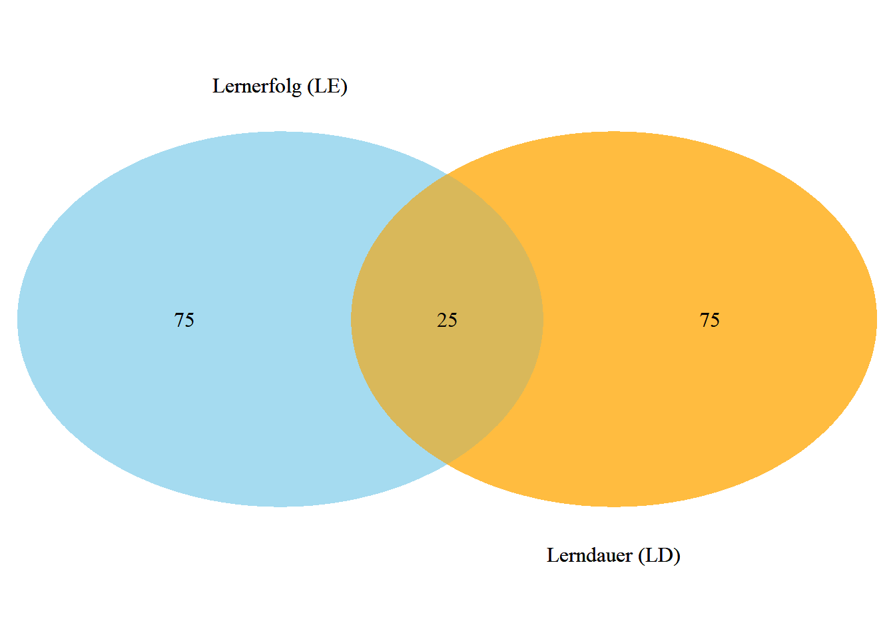
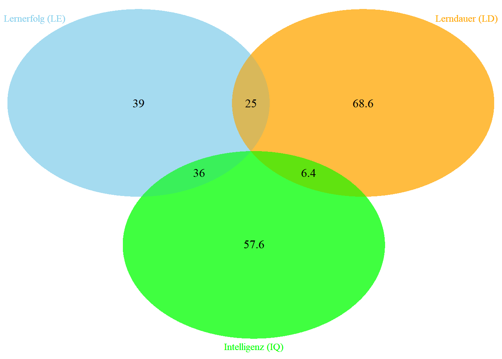

Modellvorhersage & Interpretation
Das \(b_0\) wird auch konstanter Term, oder Interzept genannt. Es ist jener \(y\)-Wert, der durch das Modell für die Stelle \(x = 0\) vorhergesagt wird. Damit ist es auch jener Punkt auf der \(y\)-Achse, durch welche die Gerade geht.
Inhaltlich entspricht dieser Wert dem vorhergesagtem Wert des Kriteriums \(\hat{y}\) an dem der Prädiktor \(x\) den Wert Null hat. Für unser Beispiel also jener Lernerfolg, der durch 0 Stunden Lernen zu erwarten wäre.
Die Steigung gibt die erwartete Veränderung des Kriteriums \(\hat{y}\) an, die einer Erhöhung des Prädiktors \(x\) um einen Einheit entspricht.
Beispiel
Der Lernerfolg \(\hat{y}\) soll durch die Anzahl der Stunden für die Vorbereitung zur Klausur \(x\) vorhergesagt werden. Sei \(b_0 = 10\) und \(b_1 = 3\). Die Regressionsgleichung lautet daher:
\[\hat{y} = 10 + 3 \cdot x\]
Hat jemand \(x = 0\) Stunden gelernt, wird anhand des Modells ein Lernerfolg von 10 vorhergesagt. Bei einem Lernaufwand von \(x = 1\) Stunde, würde das Modell einen Lernerfolg von \(\hat{y} = 13\), also eine um 3 Einheiten besseren Lernerfolg vorhersagen.
In vielen Fällen ist jedoch eine Vorhersage eines \(\hat{y}\)-Werte bei einem \(x = 0\) nicht sinnvoll. Würde man z.B. den Lernerfolg mit Intelligenz vorhersagen und wären z.B. die aus beobachteten Daten ermittelten Koeffizienten \(b_0 = -9\) und \(b_1 = 0.2\), dann würde der Lernerfolg bei einer Intelligenz von \(x = 0\) dem Wert \(\hat{y} = -9\) vorhersagen. Das wäre aber offensichtlich eine unbrauchbare Vorhersage, da es einerseits keinen negativen Lernerfolg gibt und auf einer herkömmlichen IQ-Skala der Wert \(x = 0\) auch keine Bedeutung hat.
Korrelation/Regression
Zusammenhang Korrelation und Regression:
\[b_1 = r(x,y) \cdot \frac{s_y}{s_x}\]
Daraus leiten sich folgende Erkenntnisse ab:
- Die Steigung ist positiv (negativ), wenn die Korrelation positiv (negativ) ist.
- Ist die Korrelation null, dann ist auch die Steigung null (Gerade ist parallel zur \(x\)-Achse)
- \(b\) ist abhängig von \(s_x\) und \(s_y\). Daher führt eine Änderung der Messeinheit in einer der beiden Variablen auch zu einer Änderung der Steigung!
- Aus voriger Folgerung kann man erkennen, dass \(b\) kein standardisiertes Maß für den Einfluß von \(x\) auf \(y\)
- \(b\) ist direkt proportional zu \(r\)
Eigenschaften der Gerade
Folgende Eigenschaften der Regressionsgeraden sind bemerkenswert:
- eine zur \(x\)-Achse parallele Gerade bedeutet, dass kein Zusammenhang zwischen den beiden Variablen besteht. Für jeden beliebigen Wert des Prädiktors \(x\) wird stets der gleiche \(y\)-Wert (Kriterium) vorhergesagt.
- eine nach rechts oben steigend bedeutet, dass mit Zunahme der Werte des Prädiktors auch die Werte des Kriteriums steigen und damit eine Abhängigkeit der beiden Variablen gegeben ist (positiver Zusammenhang).
- eine nach rechts fallende bedeutet, dass mit Zunahme der Werte des Prädiktors die Werte des Kriteriums fallen und damit ebenfalls eine Abhängigkeit der beiden Variablen gegeben ist (negativer Zusammenhang).
- die Regressionsgerade wurde aus den Daten einer Stichprobe berechnet.
- Die Parameter der Regressionsgerade \(b_0, b_1, s_b\) sind Schätzwerte der in der Population vorhandenen Parameter \(\beta_0, \beta_1, \sigma_b\).
Beta-Gewichte
Werden die in die Regression eingehenden Variablen (Kriterium und Prädiktorvariable(n)) vor Berechnung der Koeffizienten z-transformiert, erhält man standardisierte Koeffizienten. Diese Koeffizienten werden allegemein auch als Beta-Gewichte (B_1, oder \(\beta_1\)) bezeichnet. Es gilt:
\[\hat{z}_y = B_0 + B_1 \cdot z_x\]
Auch für das \(B_1\) besteht ein direkt proportionaler Zusammenhang der Steigung zur Korrelation:
\[B_1 = r(z_x, z_y) \cdot \frac{s_{z_y}}{s_{z_x}} = r(x, y) \cdot \frac{1}{1} = r\] Wie halten folgende wichtige Zusammenhänge zwischen \(r(x,y)\) und \(B_j\) fest:
- Die Korrelation \(r(x,y)\) und der standardisierte Steigungskoeffizient \(B\) sind identisch.1
- Beide Maße (\(r(x,y)\) und \(B\)) sind unabhängig von der Messeinheit der beiden Variablen.
- \(B\) und damit auch \(r(x,y)\) zeigen den Effekt, den die Änderung des Prädiktors um eine Standardabweichung auf das z-transformierte Kriterium hat.
- \(r\) ist somit eine Maßzahl, die bei Regressionsmodellen die Effektstärke widerspiegelt.
- Nach Cohen gelten folgende Richtwerte: \(r = 0.1\) entspricht einem kleinen, \(r = 0.3\) entspricht einem mittleren und \(r = 0.5\) entspricht einem starken Effekt.
- der \(\beta\)-Koeffizient gibt an, wie viele Standardabweichungen sich die abhängige Variable ändert, wenn sich die unabhängige Variable um eine Standardabweichung ändert. Ein \(\beta\)-Wert von 0.5 bedeutet beispielsweise, dass eine Erhöhung der unabhängigen Variable um eine Standardabweichung zu einem Anstieg der abhängigen Variable um 0.5 Standardabweichungen führt.
- da die Koeffizienten standardisiert sind, kann das \(\beta\) über verschiedene Modelle hinweg direkt verglichen werden, was hilfreich ist, wenn man wissen möchte, welcher Prädiktor den stärksten Einfluss hat (insbesondere in einer multiplen Regressionsanalyse).
- während der \(\beta\)-Koeffizient die Stärke und Richtung der Beziehung zwischen zwei Variablen beschreibt, impliziert er keine Kausalität.
Residuen
Eigenschaften von Residuen:
- Die \(\varepsilon_i\) enthalten Anteile der Kriteriumsvariablen \(y\), die durch die Prädiktorvariable \(x\) nicht erfasst/erklärt werden.
- Diese Anteile bestehen aus
- Messfehler
- Anteile, die evtl. durch weitere Variablen erklärt werden, die aber mit dem verwendeten Prädiktor nichts zu tun haben, also mit \(r(x,\varepsilon) = 0\) korrelieren.
Für den sogenannten gilt:
\[s_e = \sqrt{\frac{\sum_{i=1}^{n} e_i^2}{n-2}} = \sqrt{\frac{1}{n-2} \cdot \sum_{i=1}^{n} e_i^2}\]
Standardschätzfehler
Der **Standardschätzfehler*}** (\(s_e\)) (engl. standard error of estimate) bei einer Regression kennzeichnet die Streuung der \(y\)-Werte um die Regressionsgerade und ist damit ein Gütemaßstab für die Genauigkeit der Regressionsvorhersagen. Je kleiner dieser Fehler, desto besser die Regressionsvorhersage.
Dieser Fehler ist ein eigenes Modellgütemaß, wird aber weniger häufig als das Bestimmtheitsmaß, bzw. als Determinationskoeffizient angegeben, obwohl der Standardfehler der Residuen bei der Bewertung Anpassungsgüte möglicherweise aussagekräftiger ist (siehe Bemerkungen beim Bestimmtheitsmaß).
Bemerkung:Mithilfe des Standardfehlers können Konfidenzintervalle konstruiert werden.
Determinationskoeffizient
Das Bestimmtheitsmaß, auch als \(R^2\) bekannt, quantifiziert, wie gut die unabhängigen Variablen in einem linearen Regressionsmodell die Streuung der abhängigen Variable erklären, indem es den Anteil der Gesamtvarianz darstellt, der durch das Modell erklärt wird.
Es ist wichtig für die Bewertung der Modellanpassung, da ein höherer \(R^2\)-Wert auf eine bessere Erklärungsfähigkeit des Modells hinweist. Bei der Verwendung ist jedoch unbedingt auch auf die nachfolgend diskutierten Einschränkungen der (sinnvollen) Interpretierbarkeit diese Maßes zu achten!
\[R^2 = \frac{\sum_{i=1}^{n} (\hat{y}_i - \bar{y})^2}{\sum_{i=1}^{n} (y_i - \bar{y})^2} = 1- \frac{\sum_{i=1}^{n} (y_i - \hat{y}_i)^2}{\sum_{i=1}^{n} (y_i - \bar{y})^2}\] in Worten:
\[R^2 = \frac{\textrm{erklärte Variation}}{\textrm{gesamte Variation}} = 1 - \frac{\textrm{unerklärte Variation}}{\textrm{gesamte Variation}}\]
Wertebereich: das Maß nimmt den Wert 1 an, wenn \(\sum (y_i - \hat{y}_i)^2 = 0\), oder \(\sum_{i=1}^{n} (\hat{y}_i - \bar{y})^2 = \sum_{i=1}^{n} (y_i - \bar{y})^2\) ist, bzw. den Wert 0, wenn \(\sum_{i=1}^{n} (\hat{y}_i - \bar{y})^2 = 0\)!
Wenn das Regressionsmodell kein Absolutglied enthält (es liegt ein homogenes Regressionsmodell vor), kann das Bestimmtheitsmaß negativ werden.2
Venn Diagramm
Cohen und Cohen (1975) und Kennedy (1981) konnten zeigen, dass sich das Bestimmtheitsmaß graphisch mittels Venn-Diagrammen veranschaulichen lässt.
Wir betrachten die Variablen Lernerfolg (LE) und Lerndauer (LD). Angenommen, ihre Korrelation beträgt \(r = 0.5\). Daraus folgt der Determinationskoeffizient mit \(r^2 = 0.5^2 = 0.25\), was 25% der Varianz erklärt. Mit anderen Worten: 25% der Varianz im Lernerfolg wird durch die Lerndauer erklärt.

Damit ergibt sich aber auch zwangsläufig die Erkenntnis, dass immerhin noch 75% der Variabilität vom Lernerfolg unerklärt sind! Man könnte also davon ausgehen, dass es weitere Variablen/Merkmale gibt, die weitere Anteile dieser noch unerklärten Varianz erklären können. Ideal wären dabei eine, oder mehrere Prädiktorvariablen, die mit der Kriteriumsvariablen hoch, mit den anderen unabhängigen Variablen aber wenig bis gar nicht korrelieren, wie im nachfolgenden Graph dargestellt wird:

Wie man den Angaben zur aufgeklärten Varianz entnehmen kann, beträgt die Korrelation von \(r(LE,LD) = 0.50\), \(r(LE,IQ) = 0.60\) und der \(r(IQ,LD) = 0.08\). Daraus kann man sich ganz einfach die nicht aufgeklärte Varianz von LE errechnen. Diese ergbit sich aus \(100 - 25 - 36 = 39\).
Multiple Regression
Die Multiple lineare Regression ist ein statistisches Verfahren, mit dem versucht wird, eine beobachtete abhängige Variable durch mehrere unabhängige Variablen zu erklären. Die multiple lineare Regression stellt eine Verallgemeinerung der einfachen linearen Regression dar. Das Beiwort „linear“ bedeutet, dass die abhängige Variable als eine Linearkombination (nicht notwendigerweise) linearer Funktionen der unabhängigen Variablen modelliert wird (siehe Wikipedia). Dieser Themenbereich wird im Rahmen der Methodenlehre und Statistik 3 im Detail besprochen.
Die Grundlegende Idee kann man jedoch bereits mit den gerade vorgestellten Venn-Diagrammen bereits gut erfassen. Für ein Modell mit 2 Prädiktoren eignet sich auch noch der Scatterplot gut, um die Eigenschaften und Zusammenhänge der Residuen und des Modells zu verstehen. Anstelle einer Linie, wird es bei 2 Prädiktoren einen Ebene. Ab 3 Prädiktoren ist der Scatterplot allerdings nicht mehr darstellbar.
Eigenschaften des Determinationskoeffizienten
Der Determinationskoeffizient wird häufig als Gütemaß eines linearen Modells verwendet. Dabei sind jedoch folgende Eigenschaften unbedingt zu berücksichtigen:
- zeigt die der linearen Approximation, jedoch nicht, ob das Modell richtig spezifiziert wurde, also ob eine lineare Anpassung überhaupt die geeignete Modellvorstellung ist.
- sagt nichts über die kausale Ursache des Zusammenhangs aus. Der Schluss, dass die unabhängige Variable \(x\) der Grund für die Änderungen in \(y\) sind kann diesem Maß nicht entnommen werden!
- gibt keine Auskunft über die statistische Signifikanz des ermittelten Zusammenhangs!
- ein hohes Bestimmtheitsmaß ist kein Beweis für ein Modell und ein niedriges Bestimmtheitsmaß bedeutet nicht, dass es sich um ein Modell handelt. Veranschaulicht wird diese Eigenschaft durch das Anscombe-Quartett, siehe nächste Folie.

WICHTIG: dies gilt prinzipiell für ELR, aber unter der Bedingung, dass alle verwendeten Prädiktoren voneinander unabhängig sind (also nicht korrelieren) auch für die Beta-Gewichte der multiplen Regression!}↩︎
Normalerweise wird \(R^2\) in der Formel \(R^2 = 1 - \frac{\text{SSR}}{\text{SST}}\) definiert, wobei SSR (Sum of Squared Residuals) der Teil der Varianz ist, der nicht durch das Modell erklärt wird, und SST (Total Sum of Squares) die Gesamtvarianz der abhängigen Variablen darstellt. In einem gewöhnlichen linearen Regressionsmodell, das ein Absolutglied (Intercept) beinhaltet, wird das Modell der optimalen Anpassung dadurch erreicht, dass es den Datenmittelwert als Ausgangspunkt nutzt. Dadurch hat SSR im besten Fall einen geringeren Wert als SST, was zu einem positiven \(R^2\) führt. Bei einem homogenen Modell ohne Absolutglied, also ohne den konstanten Term, wird das Modell gezwungen, durch den Ursprung (Nullpunkt) zu verlaufen. Dies kann die Anpassung des Modells an die Daten stark verschlechtern, insbesondere wenn die tatsächlichen Datenpunkte um einen von Null verschiedenen Mittelwert gruppiert sind. In solchen Fällen kann die Summe der quadrierten Residuen (SSR) größer werden als die Gesamtvarianz (SST), was zu einem negativen Wert von \(1 - \frac{\text{SSR}}{\text{SST}}\) führt. Ein negatives \(R^2\) ist eine Indikation dafür, dass das Modell schlechter abschneidet als ein einfaches Durchschnittsmodell, das lediglich den Mittelwert der abhängigen Variablen als Vorhersage nutzt.↩︎